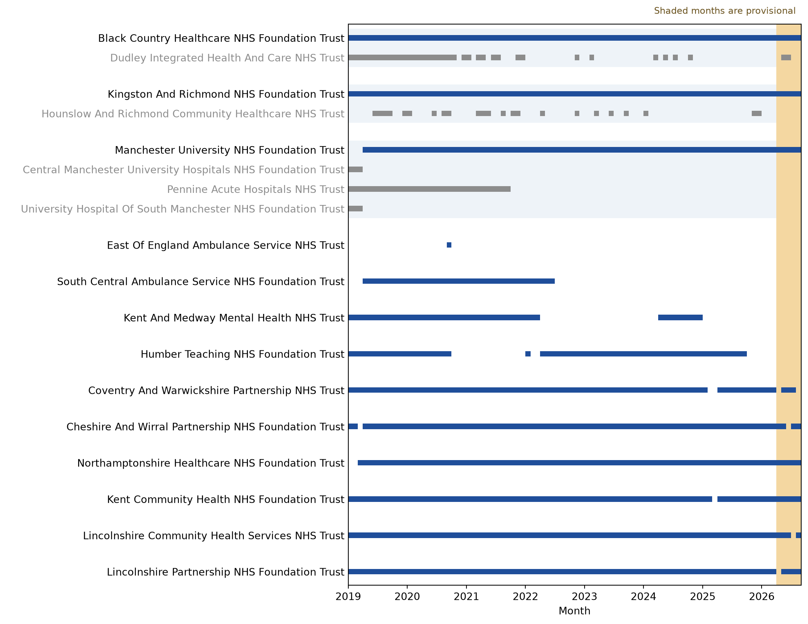
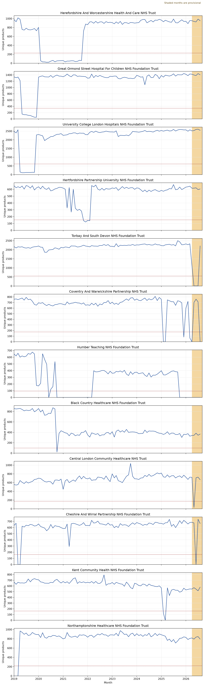

Revisiting trust data completeness and consistency
published
An updated look at gaps in monthly SCMD submissions and consistency in the number of products issued by NHS trusts, revisiting our February 2025 Organising Organisations blog posts.
In February 2025, we published two blog posts looking at how NHS trusts report data to the Secondary Care Medicines Data (SCMD):
Those posts examined how complete and consistent trust submissions to the SCMD were, up to February 2024, using a selection of illustrative trusts. Here, we update the analysis to use the latest SCMD dataset — running from January 2019 to August 2026, with April 2026 to August 2026 — and highlight any trusts where there is still incomplete or inconsistent data.
Question
Where NHS trusts appear in the SCMD, have they submitted data for every month we would expect, and when they do submit data, is the number of unique products they report consistent over time?
Method
Following our earlier blog posts, we start from NHS organisations in England without a recorded legal or operational closure date before January 2019 (the start of the SCMD). Organisations that have never submitted any positive-quantity rows to the SCMD — such as most ambulance service trusts — are excluded from the completeness and consistency analyses below, leaving 227 trusts with SCMD data. Organisation information, including the relationships between trusts, is taken from the Organisation Data Service (ORD) API.
To assess completeness, we treat a trust as having submitted data in a month if it reports at least one product with a positive quantity. We expect submissions in every month a trust was open from January 2019 to August 2026: starting in January 2019 (or the trust’s open month if later, taking the later of the legal and operational open dates where both exist) and ending in August 2026 (or the trust’s closure month if earlier, taking the earlier of the legal and operational close dates where both exist). Every included trust missing at least one expected month is plotted on the submission timeline. Where a trust with missing months is linked to a predecessor or successor, we group the related trusts together in a shaded band — placing the successor first in blue (even if its own submission history is complete) and indenting predecessors beneath it in grey — so organisational changes are easier to see.
To assess consistency, we first aggregate predecessor submissions into their ultimate successor (following the chain of listed successors in ORD) and count the distinct VMP codes issued across the combined organisation each month, so a product reported by both a predecessor and its successor in the same month is only counted once. For trusts with at least six submitted months, we flag a submitted month as unusually low when this combined count drops below 25% of that trust’s own median across submitted months. Months with zero products represent missing submissions rather than partial ones and are covered under completeness instead.
Finally, to look directly at organisational change, we plot the unaggregated monthly product counts for every current trust that has at least one predecessor with SCMD data, keeping the ultimate successor (in blue) and each predecessor (in grey) as separate labelled lines, with unsubmitted months drawn as zero. Across all charts, the amber shaded band highlights the provisional window (April 2026 to August 2026).
Findings
Does every organisation have data for each month?
The majority of the 227 trusts have data for every month they were open from January 2019 to August 2026, but there are 13 exceptions. These are shown in the chart and table below, where solid bars mark months in which data was submitted.
Some trusts, such as Kent Community Health NHS Foundation Trust, Lincolnshire Community Health Services NHS Trust, and Lincolnshire Partnership NHS Foundation Trust, are only missing a single month (often within the recent provisional window), whilst others, such as Humber Teaching NHS Foundation Trust and Kent And Medway Mental Health NHS Trust, are missing substantial periods of data. Two ambulance trusts — East Of England Ambulance Service NHS Trust and South Central Ambulance Service NHS Foundation Trust — also appear here because, unlike most ambulance trusts, they submitted data for a limited part of the period rather than none at all.
Several of the apparent gaps sit alongside mergers or acquisitions, shown in the shaded groups at the top of the chart. For instance, Central Manchester University Hospitals NHS Foundation Trust and University Hospital Of South Manchester NHS Foundation Trust show submissions prior to being merged into Manchester University NHS Foundation Trust.Conversely, Dudley Integrated Health And Care NHS Trust and Hounslow And Richmond Community Healthcare NHS Trust both show fragmented submissions ahead of their 2024 mergers (into Black Country Healthcare NHS Foundation Trust and Kingston And Richmond NHS Foundation Trust respectively). There are also occasional submissions under their legacy codes after their recorded closure dates.
| ODS code | Organisation | Missing months |
|---|---|---|
| RYC | East Of England Ambulance Service NHS Trust | January 2019 to August 2020 and October 2020 to August 2026 |
| RYE | South Central Ambulance Service NHS Foundation Trust | January 2019 to March 2019 and July 2022 to August 2026 |
| RY9 | Hounslow And Richmond Community Healthcare NHS Trust | January 2019 to May 2019, October 2019 to November 2019, February 2020 to May 2020, July 2020, October 2020 to February 2021, June 2021 to July 2021, September 2021, December 2021 to March 2022, May 2022 to October 2022, December 2022 to February 2023, April 2023 to May 2023, July 2023 to August 2023, October 2023 to December 2023 and February 2024 to October 2024 |
| RXY | Kent And Medway Mental Health NHS Trust | April 2022 to March 2024 and January 2025 to August 2026 |
| RYK | Dudley Integrated Health And Care NHS Trust | November 2020, February 2021, May 2021, August 2021 to October 2021, January 2022 to October 2022, December 2022 to January 2023, March 2023 to February 2024, April 2024, June 2024 and August 2024 to September 2024 |
| RV9 | Humber Teaching NHS Foundation Trust | October 2020 to December 2021, February 2022 to March 2022 and October 2025 to August 2026 |
| RYG | Coventry And Warwickshire Partnership NHS Trust | February 2025 to March 2025, April 2026 and August 2026 |
| R0A | Manchester University NHS Foundation Trust | January 2019 to March 2019 |
| RXA | Cheshire And Wirral Partnership NHS Foundation Trust | March 2019 and June 2026 |
| RP1 | Northamptonshire Healthcare NHS Foundation Trust | January 2019 to February 2019 |
| RYY | Kent Community Health NHS Foundation Trust | March 2025 |
| RY5 | Lincolnshire Community Health Services NHS Trust | July 2026 |
| RP7 | Lincolnshire Partnership NHS Foundation Trust | April 2026 |
What does this mean for data completeness?
This makes two things clear:
- There are some trusts with missing data that cannot be explained by organisational change. When trusts such as Humber Teaching NHS Foundation Trust or Kent And Medway Mental Health NHS Trust are included in any analyses, care needs to be taken to highlight that there could be undercounting of medicines issued during those periods.
- There are varying patterns of data submission around organisational changes. Some predecessors stop submitting cleanly on their legal closure date, whereas others continue submitting under legacy ODS codes for months or years after a merger while local systems are updated. Data for related trusts therefore needs to be carefully aggregated to avoid spurious patterns in analyses using their data.
Is the data submitted by each organisation each month consistent?
When trusts do submit their data, the stock they issue is expected to be relatively consistent over time. In our earlier posts, we saw that the overall number of medicines and devices issued varies substantially across different types of NHS trusts — from smaller community and mental health trusts to large acute teaching trusts — and we can use the number of unique products issued each month to check how stable each trust’s reporting is over time.
Even after aggregating predecessor data into successor trusts, 12 trusts have at least one submitted month in which the number of unique products falls below 25% of that trust’s median monthly count. These trusts are shown in the figure and table below (note the different y-axis scales across panels). The red dashed line marks the 25% threshold on each chart.
For example, University College London Hospitals NHS Foundation Trust is stable at around 2,400 to 2,600 unique products per month from December 2019 onwards, whereas April to November 2019 contain data for far fewer products. Great Ormond Street Hospital For Children NHS Foundation Trust (May to December 2019) and Herefordshire And Worcestershire Health And Care NHS Trust (February 2020 to October 2021) show similar sustained dips before returning to a steady level. These patterns likely reflect incomplete submissions rather than genuine shifts in clinical activity. Several other trusts — such as Torbay And South Devon NHS Foundation Trust and Central London Community Healthcare NHS Trust — show sharp drops during the provisional window (April 2026 to August 2026), which may be revised once finalised data is published.

| ODS code | Organisation | Median products | Low months |
|---|---|---|---|
| R1A | Herefordshire And Worcestershire Health And Care NHS Trust | 909 | February 2020 to October 2021 |
| RP4 | Great Ormond Street Hospital For Children NHS Foundation Trust | 1,354 | May 2019 to December 2019 |
| RRV | University College London Hospitals NHS Foundation Trust | 2,442 | April 2019 to November 2019 |
| RWR | Hertfordshire Partnership University NHS Foundation Trust | 611 | November 2021 to February 2022 |
| RA9 | Torbay And South Devon NHS Foundation Trust | 2,206 | May 2026 to July 2026 |
| RYG | Coventry And Warwickshire Partnership NHS Trust | 702 | December 2025 and March 2026 |
| RV9 | Humber Teaching NHS Foundation Trust | 381 | June 2020 and January 2022 |
| TAJ | Black Country Healthcare NHS Foundation Trust | 396 | October 2020 |
| RYX | Central London Community Healthcare NHS Trust | 688 | May 2026 |
| RXA | Cheshire And Wirral Partnership NHS Foundation Trust | 650 | April 2019 |
| RYY | Kent Community Health NHS Foundation Trust | 646 | February 2025 |
| RP1 | Northamptonshire Healthcare NHS Foundation Trust | 870 | March 2019 |
What about when organisations change?
Just as there are varying patterns in whether trusts submit data around mergers and acquisitions, there are also interesting patterns in the number of unique products these organisations submit data for during periods of restructuring.
The figure below shows the monthly number of unique products issued for all 27 current trusts in this extract whose predecessors also appear in the SCMD, plotted before predecessor data is rolled into the successor. Ultimate successors are shown in blue and their predecessors in grey.
Across these groups, we can see all three of the handover patterns described in our February 2025 post:
- Merging into a larger existing trust with little change in the successor’s product count: When Weston Area Health NHS Trust merged into Bristol NHS Foundation Trust (formerly University Hospitals Bristol and Weston NHS Foundation Trust) in April 2020, the number of products issued under Weston’s code dropped to zero as it stopped submitting separately, without any obvious shift in the successor’s product count (by contrast, North Bristol NHS Trust has continued submitting under its own code in the provisional months following its 2026 merger with the trust).
- Step increases following mergers: Somerset NHS Foundation Trust has undergone multiple organisational changes — a merger with Taunton And Somerset NHS Foundation Trust in April 2020, followed by a merger with Yeovil District Hospital NHS Foundation Trust in April 2023. Following each change, as the predecessor’s separate submissions dropped to zero, the number of unique products issued each month under Somerset’s code stepped up.
- Formation of a new trust from existing trusts: University Hospitals Dorset NHS Foundation Trust was formed in October 2020 from the merger of Poole Hospital NHS Foundation Trust and The Royal Bournemouth And Christchurch Hospitals NHS Foundation Trust, with both predecessors dropping to zero as the new trust began submitting data. A more recent example is North London NHS Foundation Trust, formed in November 2024 from Camden And Islington NHS Foundation Trust and Barnet, Enfield And Haringey Mental Health NHS Trust — though there, Barnet, Enfield and Haringey continued submitting alongside the new trust until July 2025 before dropping to zero.
What does this mean for data consistency?
This highlights that, as well as being aware of missing monthly submissions by individual trusts, we also need to check whether the data that is submitted each month is consistent. Sharp drops in the number of unique products issued provide a practical way to spot potential partial submissions programmatically.
However, there are also legitimate changes in the number of products issued by trusts around mergers and acquisitions. Aggregating data for predecessor trusts into their ultimate successor makes it much easier to distinguish genuine organisational handovers from unexpected drops in reporting — which is how we screen for inconsistent months above, and how we surface these patterns on the Submission History page of OpenPrescribing Hospitals.
Conclusions
Comparing the current extract with our February 2025 posts shows that several of the earlier gaps and legacy-reporting anomalies have since been resolved in the published SCMD:
- Trusts that were previously absent from the SCMD — such as North London NHS Foundation Trust and Hounslow And Richmond Community Healthcare NHS Trust — now appear in the data (though Hounslow and Richmond’s pre-merger submissions remain incomplete).
- Short gaps and apparent cut-offs have been backfilled for several trusts: The Royal Marsden NHS Foundation Trust now has a complete submission history across the whole period, and Northamptonshire Healthcare NHS Foundation Trust continues submitting up to August 2026 rather than stopping in November 2022.
However, incomplete and inconsistent submissions have not disappeared — longstanding gaps at Humber Teaching NHS Foundation Trust and the 2019 dip in unique products at University College London Hospitals NHS Foundation Trust both remain, alongside newer gaps and provisional-window drops at other trusts. Understanding these patterns, and aggregating predecessor data carefully around mergers, therefore remains essential when using the SCMD for analysis.
Contact
If you have any questions or feedback about this report, please contact us at bennett@phc.ox.ac.uk.